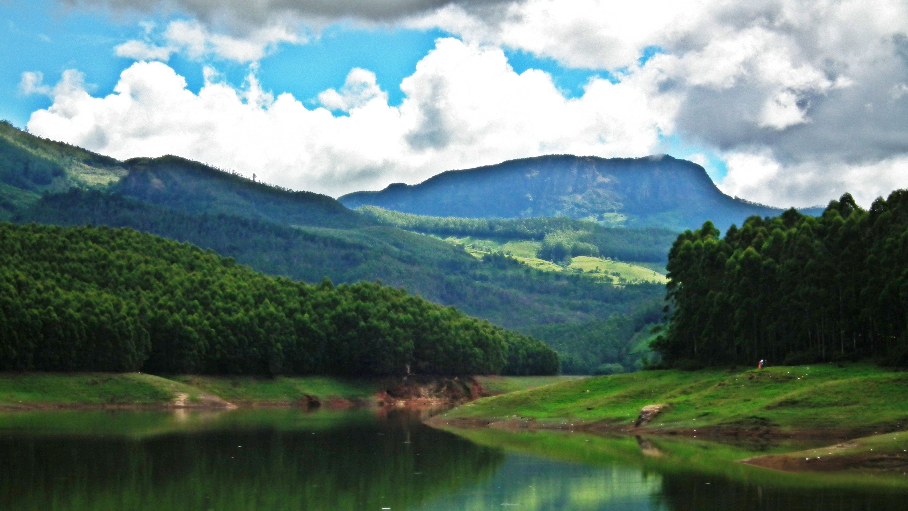
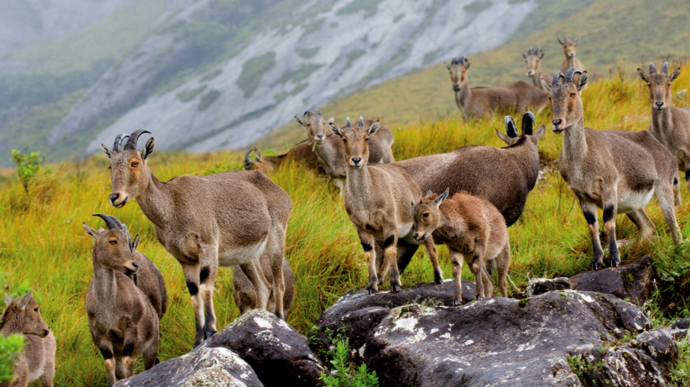

Idukki is situated at the top of Western Ghats surrounded by mountains. The Asia's first and the world's second great arch dam is in Idukki. This arch dam built across the Kuravan Kurathi mountain is wonderful and beyond description. Attached to this dam of 650 feet length and 550 feet height, two other dams are also there in Kulmavu and Cherunthony. This beautiful high range district of Kerala is geographically known for its mountainous hills and dense forests. The district headquarters of Idukki is located at Kuyilimala in Painavu.A land-locked district, Idukki is one of the most nature rich areas of Kerala.
Munnar
Munnar is situated at the confluence of three mountain streams - Mudrapuzha, Nallathanni and Kundala, 1600 m above sea level. Munnar also has the highest peak in South India, Anamudi, which towers over 2695 m.

Echo Point
This scenic place gets its name from the natural echo phenomenon here. Echo Point is on the way to Top Stations from Munnar.

Eravikulam National Park
The 97 sq. km. park is situated in the Devikulam taluk and is home to the Nilgiri tahr. The Anamudi peak (2695m) is located in the southern region of the park.
Idukki district was formed on 26 January 1972 as per Government notification No 54131/C2/71/RD dated 24th January 1972. The district consists of Devikulam, Udumbanchola and Peermedu taluks of the erstwhile Kottayam district and Thodupuzha taluk (excluding two villages Manjallore and Kalloorkadu) of the erstwhile Ernakulam district. At the time of formation the district headquarters started functioning at Kottayam and from there it was shifted to Painavu in Thodupuzha taluk in June 1976, where it is proposed to build a new planned forest township.
The district's name, 'Idukki' is supposed to be derived from the Malayalam word 'Idukku' which means a narrow gorge. Periyar which is one of the largest rivers of Kerala, flowing through Idukki gorge formed between the two high massive rocks called "Kuravan" and "Kurathi", is the site of the gigantic Idukki arch dam.